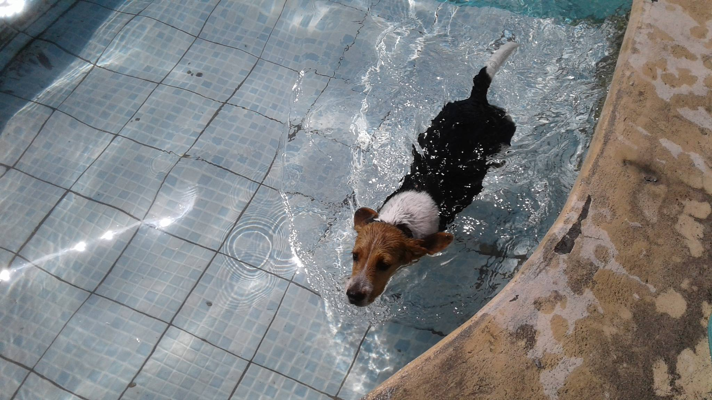
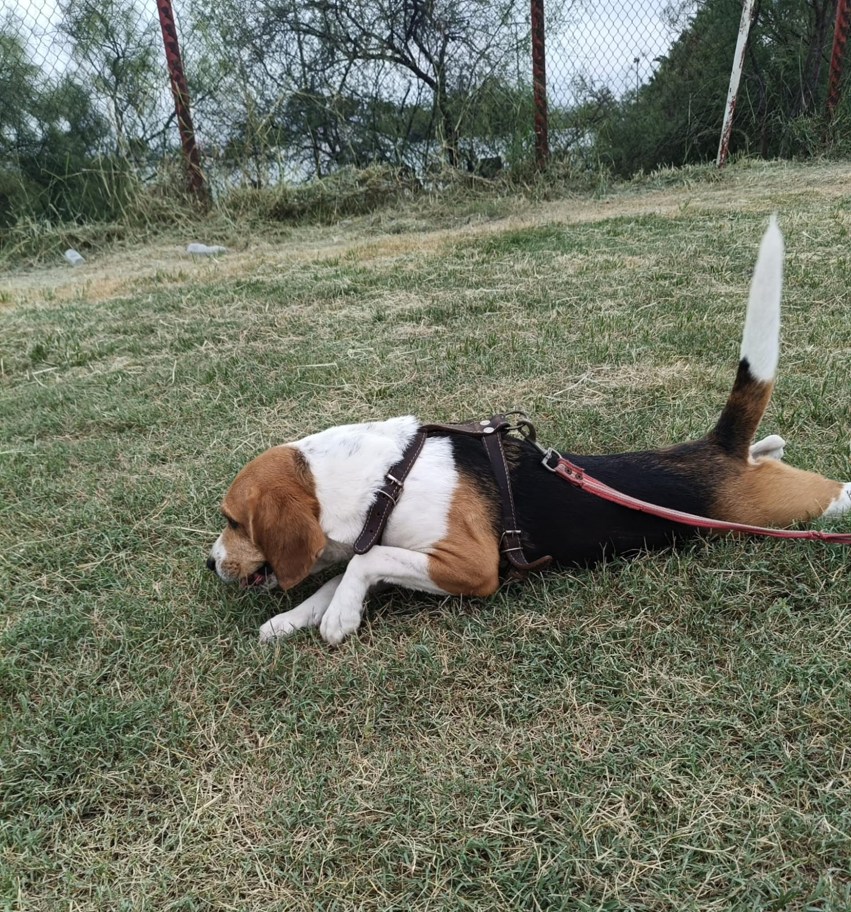

Anécdotas
La vez que... Primera anécdota: estabamos el la quinta de mi tio, yo me meti a la alberca y a mi mascota no le gusta el agua, pero al querer estar conmigo decidio lanzarze al agua. Acto seguido nado asustada hacia donde estaba y se me subio encima para que la sacara del agua.
El día que... Segunda anécdota: cuando recien llego, era una bolita de pelos negro con blanco, en ese entonces tenia 2 meses y daba miedo quedarse sola, yo me quedaba con ella hasta que se durmiera y despues podia irme a dormir.
Nunca olvidaré... Tercera anécdota: las veces que jugamos en el campo de americano, a ella le encantaba correr en ese campo y explorar sus alrededores. Actualmente no corre tanto y ya no se puede ingresar a la cancha, pero aun le gusta caminar por ahi.

Anécdota 1

Anécdota 2
